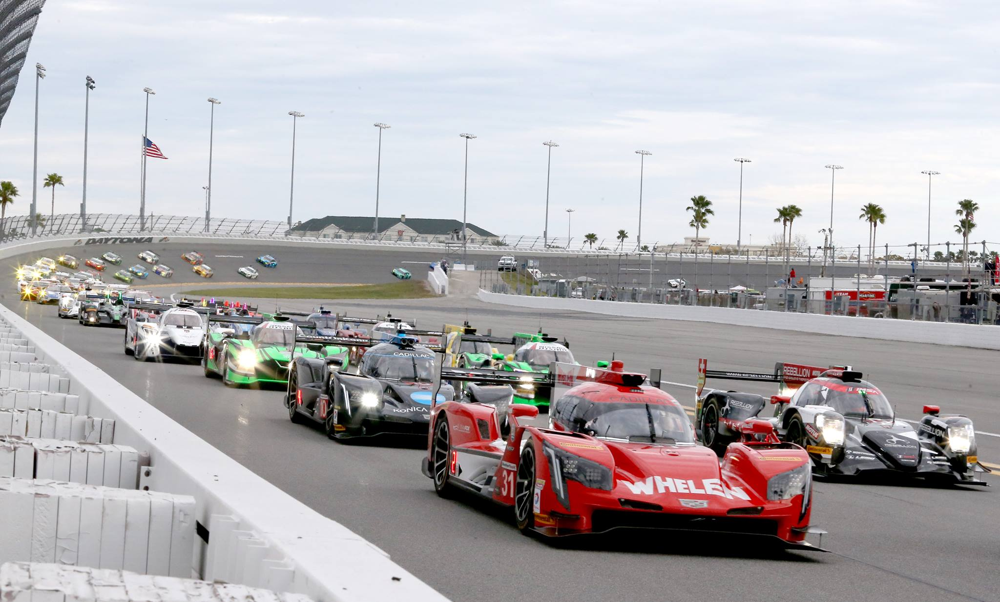
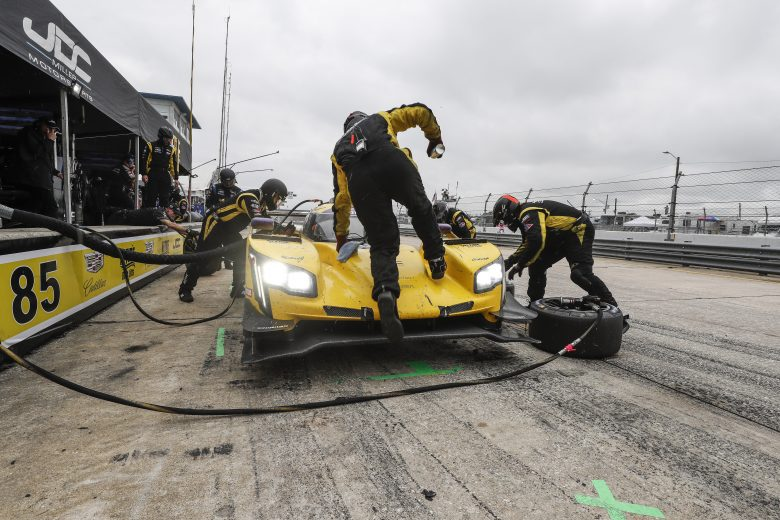

1 / 3

24 Hours of Daytona
2 / 3

12 Hours of Sebring
3 / 3

24 Hours Le Mans
Endurance racing is a form of motorsport racing which is meant to test the durability of equipment and endurance of participants. Teams of multiple drivers attempt to cover a large distance in a single event, with participants given a break with the ability to change during the race. Endurance races can be run either to cover a set distance in laps as quickly as possible, or to cover as much distance as possible over a preset amount of time.
One of the more common lengths of endurance races has been running for 1,000 kilometres (620 mi), or roughly six hours. Longer races can run for 1,000 miles (1,600 km), 12 hours, or even 24 hours. Teams can consist of anywhere from two to four drivers per event, which is dependent on the driver's endurance abilities, length of the race, or even the rules for each event.
Coppa Florio was an Italian car race started in 1900, and renamed in 1905 when Vincenzo Florio offered the initial 50 000 Lira and a cup designed by Polak of Paris. The Brescia race visited the route Brescia-Cremona-Mantova-Brescia. In 1908, the race used the Circuito di Bologna: Bologna-Castelfranco Emilia-Sant'Agata Bolognese-San Giovanni in Persiceto-Bologna. Since 1914 most of the Coppa Florio was co-organized with the Targa Florio near Palermo, Sicilia, running four or five laps, 108 km each.
The Targa Florio was an open road endurance automobile race founded in 1906- the track length of the last decades was limited to the 72 kilometres of the Circuito Piccolo delle Madonie, which was lapped 11 times.
The Mille Miglia was an open-road endurance race which took place in Italy 24 times from 1927 to 1957.
The world's first organized 24-hour automobile race event was held on a 1-mile oval track at Driving Park, Columbus, Ohio on July 3–4, 1905.[1] Beginning on the afternoon of July 3, four cars from Frayer-Miller, Pope-Toledo, Peerless and White Steamer raced for a $500 silver trophy. The winning Pope-Toledo car covered 828.5 miles. A protest was filed by the Frayer-Miller and Peerless teams, alleging the Pope-Toledo was not owned by the driver, instead sent from the factory with an engine built for racing.
The first 24-hour race to take place at a dedicated motorsport venue was at Brooklands, eleven days after its opening in 1907. This incurred the wrath of local residents and would lead to the Double Twelve race. This format meant the race took place for 12 hours each between 8 am to 8 pm and between it, the cars were locked up overnight to prevent maintenance work from being performed on them.
The 2001 Dakar Rally saw competitors cover a distance of 10,739 kilometres (6,673 mi) with a winning time of 70 hours over 20 days with three classes of cars, motorbikes, and trucks.[4] The 1992 Paris–Cape Town Rally covered a distance of 12,427 km. The 1994 edition saw competitors return to Paris, for a distance of 13,379 km.[5] The Expedition Trophy, first held in 2005, runs from Murmansk to Vladivostok, for a total distance of 12,500 km. The 1908 New York to Paris Race covered a distance of over 16,000 km, taking 169 days from February 12 to July 30.
In automobile endurance racing, three events have come to form a Triple Crown. They are considered three of the most challenging endurance races over the decades: the 24 Hours of Daytona, 12 Hours of Sebring, and 24 Hours of Le Mans. Phil Hill was the first in 1964 to win the three races, and Timo Bernhard the most recent (2010). No driver has won the three events in the same year (Ken Miles lost the chance to win all three events when a problem with the Ford team orders for a photo finish made him lose the 1966 24 Hours of Le Mans; he died two months later testing the Ford J-car.) ; Hurley Haywood and Al Holbert have won the three races at least twice each.
Bold on year indicate at which race the driver achieved his Triple Crown.
| Driver | Total Wins | Year Completed | 24 Hours of Daytona | 12 Hours of Sebring | 24 Hours of Le Mans |
|---|---|---|---|---|---|
| Phill Hill | 6 | 1964 | 1964 | 1958, 1961 | 1958, 1961, 1962 |
| Dan Gurney | 3 | 1967 | 1962 | 1959 | 1967 |
| Hans Herrmann | 4 | 1970 | 1968 | 1960, 1968 | 1970 |
| Jackie Oliver | 3 | 1971 | 1971 | 1969 | 1969 |
| Jacky Ickx | 9 | 1972 | 1972 | 1969, 1972 | 1969, 1975, 1976, 1977, 1981, 1982 |
| Hurley Haywood | 10 | 1977 | 1973, 1975, 1977, 1979, 1991 | 1973, 1981 | 1977, 1983, 1994 |
| A. J. Foyt | 4 | 1985 | 1983, 1985 | 1985 | 1967 |
| Al Holbert | 7 | 1986 | 1986, 1987 | 1976, 1981 | 1983, 1986, 1987 |
| Andy Wallace | 6 | 1992 | 1990, 1997, 1999 | 1992, 1993 | 1988 |
| Mauro Baldi | 4 | 1998 | 1998, 2002 | 1998 | 1994 |
| Marco Werner | 7 | 2005 | 1995 | 2003, 2005, 2007 | 2005, 2006, 2007 |
| Timo Bernhard | 4 | 2010 | 2003 | 2008 | 2010, 2017 |